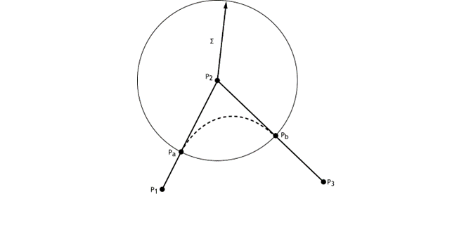

RPS has a group of move commands by which is possible to move a robot from one position to another in multiple ways.
It is possible to modify the behaviour of the movement according to some parameters. These parameters can be standalone parameters or embedded parameters in move commands.
As standalone parameters, they override the default values and apply to all subsequent move commands, i.e. all moves will be performed with the new parameter value.
As embedded parameters, they only affect the hosting move instruction. If not specified and not overridden by standalone parameters, default values will be assigned to these parameters. The order of embedded parameters does not affect the move instruction.
|
Standalone Parameter |
Equivalent Embedded Parameter |
Parameter Range |
|
WORLD_POS_SPEED: linear speed mm/s |
S |
MOVEL :[0, WORLD_POS_MAX_SPEED]
|
|
WORLD_ORI_SPEED: joint speed deg/s |
S |
MOVEJ :[0, WORLD_ORI_MAX_SPEED] |
|
WORLD_MAX_ACC |
A |
Percentage of WORLD_MAX_ACC [1 - 100] |
|
WORLD_MAX_DEC |
D |
Percentage of WORLD_MAX_ACC [1 – 100] |
|
TOOL_OFFSET |
T
|
[0 - 31] |
|
OBJECT_FRAME |
O
|
[0 - 31], or name of the Object Frame in “” |
|
ROBOT CONFIGURATION |
C |
SCARA : {0, 1}. 0 = left-handed; 1 = right-handed
ONLY available for joint moves (MOVEJ, MOVEJREL). |
|
PRECISION_ZONE |
ZF: orientation changes from start until the end of blend curve. ZT: orientation changes along blend curve. |
[0 - Length of move]
|
|
Interrupt by path percentage |
IP |
[0 - 200] |
|
Interrupt by input number |
II |
Input number depending on the controller. |
|
Interrupt by time |
IT |
[0, ) mS |
|
Routine Output |
RO |
Output number depending on the controller |
|
Long Path |
LP |
True or false 0 or 1 |
Speed is a default parameter for linear and for orientation movements specified by parameter WORLD_POS_SPEED for linear speed in mm/s and parameter WORLD_ORI_SPEED in deg/s for joint speed.
Embedded parameter ‘S’ means linear speed if it is used in linear move commands, such as MOVEL, MOVEC or MOVELREL. It will mean joint speed if it is used in joint move commands, like MOVEJ or MOVEJREL.
Acceleration is a default parameter in ROBOT_DEFINITIONS file specified by parameter WORLD_POS_MAX_ACC for linear axes and parameter WORLD_ORI_MAX_ACC for orientation axes.
Embedded parameter ‘A’ can be set as a percentage (%) of the acceleration specified in ROBOT_DEFINITIONS. Valid values are between 1 and 100, that is between 1% and 100% of the specified acceleration.
Deceleration is a default parameter in ROBOT_DEFINITIONS file specified by parameter WORLD_POS_MAX_DEC for linear axes and parameter WORLD_ORI_MAX_ACC for orientation axes.
Embedded parameter ‘D’ can be set as a percentage % of the deceleration specified in ROBOT_DEFINITIONS. Valid values are between 1 and 100, that is between 1% and 100% of the specified deceleration.
The robot configuration can only be used in the MOVEJ command, which always overrides the current configuration. This means that if a MOVEJ command is executed with a different configuration than current configuration, subsequent move instructions will also be executed using the new robot configuration. This will prevent singularities because consecutive linear moves cannot have different robot configurations.
An output can be triggered when a certain condition is met. This is achieved using Routine Output and Interrupts.
The output specified in RO (Routine Output) will be turned ON / OFF when any of the conditions specified by IP (Interrupt Percentage), II (Interrupt Input) or IT (Interrupt Time) is met. If the output is already in the specified status, no further action will be taken when the condition is met.
The specified output (RO) will be turned ON / OFF when the robot has traversed a certain percentage of the path specified by IP (Interrupt Path).
MOVEL GTA(10) IP:=50 RO:=9,ON
In this example, output number 9 will be turned ON when the robot finishes 50% of the move to GTA 10.
The range of this parameter is from 0 to 200. The interrupt can be generated even while the robot is blending two moves. This can be done by specifying IP from 100 to 200.
MOVEL GTA(10) Z:=30 IP:=130 RO:=9,ON
In this example, the output 9 will be turned ON when the robot finishes 30% of the blend curve.
If there is no blending in a move and an IP > 100 is specified, no action will be taken.
The specified output (RO) will be turned ON / OFF when the input specified in II (Interrupt Input) gives a rising / falling edge.
MOVEL GTA(10) II:=3,ON RO:=9,ON
In this example, when input 3 gives a rising edge (goes from low to high) output 9 will be turned ON while the MOVE is being executed.
If input 3 turns ON after the move finishes, no action will be taken.
The specified output (RO) will be turned ON / OFF after the time specified in IT (Interrupt Time) is reached.
MOVEL GTA(10) IT:=700 RO:=9,ON
In this example, output 9 will be turned ON after 700mS after the move starts.
If the move finishes earlier than 700mS, no action will be taken.
It is possible to force the orientation of the position to be interpolated as the longest distance instead of the shortest. By default, the shortest is the orientation used, which has the default value of 0.
Precision zone parameter is the degree of approximation of the manipulator’s end effector to a taught point.
 If a point-to-point trajectory must pass exactly through every point, then the trajectory must stop at each point where the direction of the path changes. Otherwise, there will be discontinuities in the velocity profile of the trajectory. This can be avoided by allowing the path to deviate slightly from the points, using blending curves to smooth the path near the point while changing directions without stopping.
The system allows this to transition smoothly between any two straight lines generated by MOVEL instructions.
It is not possible to control the transition shape. However, a tightness parameter is provided to measure how close the trajectory is to the target before blending into the next move (with the next target).
There are two tightness parameters: ZF and ZT. Both specify the tightness of the blend curve in mm. ZF specifies that the change in orientation is performed from the start of the straight line until the end of the blend curve, whereas ZT specifies that the change in orientation is done entirely along the blend curve.